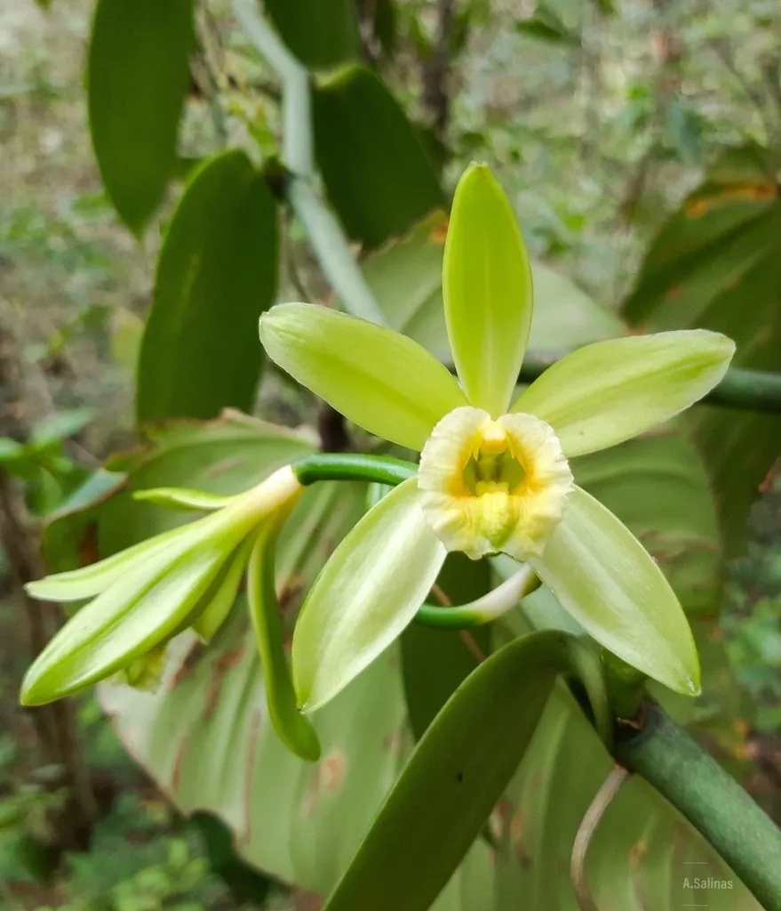

农作物与经济植物 · 植物界
香草 Vanilla planifolia

香草是兰科多年生攀援藤本，果荚经发酵后散发浓郁甜香，是冰淇淋、烘焙和巧克力常用的天然香料。
- 分类
- 门被子植物门纲单子叶植物纲目兰目科兰科属香荚兰属
- 栖息环境
- 热带雨林林下，喜高温高湿和半阴
- 地理分布
- 原产墨西哥与中美洲，主产于马达加斯加、印度尼西亚
- 保护级别
- 暂无评估（栽培作物）
物种志
香草是兰科多年生攀援藤本，茎粗壮肉质，长可达十余米，节上生不定根，可攀附树干或棚架生长。叶片椭圆形，肉质。花淡黄绿色，唇瓣明显，单朵开放时间短。果实为长条形蒴果，成熟后呈黑褐色，内含大量细小种子。
香草原产墨西哥与中美洲，当地托托纳克人最早栽培，后传入马达加斯加、留尼汪和印度尼西亚。它喜高温高湿、半阴环境，需人工授粉才能大量结果。果荚采收后要经过杀青、发酵、干燥等工序，才能产生香草醛的甜香。香草荚可制香草精、冰淇淋和烘焙食品，是价格昂贵的天然香料。香草开花后需在当天完成授粉，发酵过程要控制温度和湿度，优质香草荚表面可见白色香草醛结晶。
形态与习性
- 生长型多年生攀援藤本
- 叶椭圆形，肉质
- 花淡黄绿色，需人工授粉
- 果实长条形蒴果
- 加工杀青、发酵、干燥
- 用途冰淇淋、烘焙与香草精
趣味知识
- 香草的香味来自果荚发酵后产生的香草醛。
- 香草原产墨西哥，离开原生地常需人工授粉。
- 香草荚是世界价格最昂贵的香料之一。